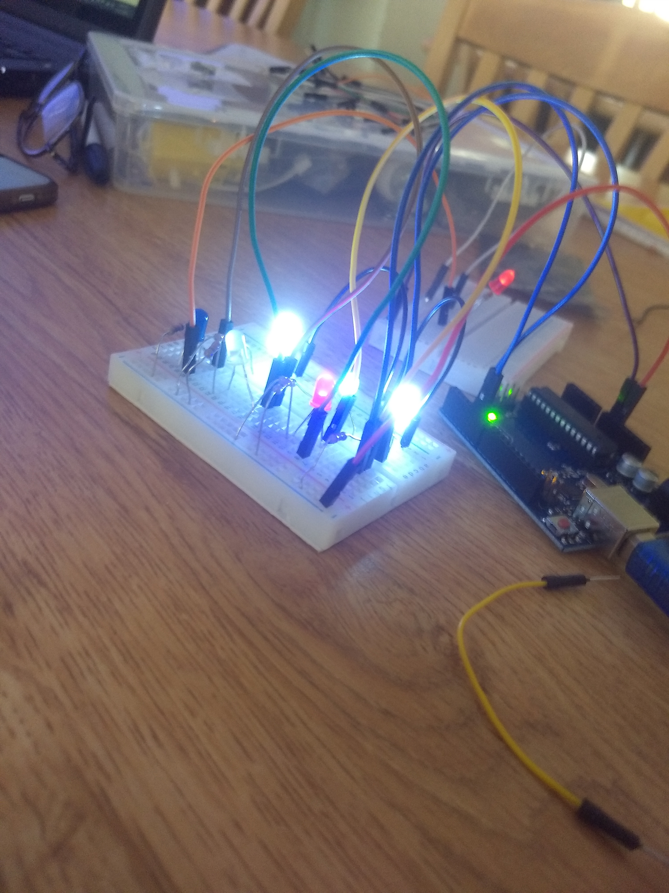

Today I learned how to create a CSS stylesheet. There are still a little bit of problems with it, but They'll be straightened out soon enough.
Update: I've fixed the issue just like I said I would. Im getting a little better at problem solving thanks to coding.
June 13, 2018
Today I learned how to write JavaScript. It's not my favorite language to write in because of how complicated it gets for me. Sometimes JavaScript is simple and easy like when I was writing the code so that the time and date will pop up when a screen is opened. Other times JavaScript is hard like when I was trying to code the button so that a sentence would change whenever it was clicked. My computer stopped me from loading my old progress so I had to start again from an earlier checkpoint. It was fun however, when the buttons actually worked and our funny messages would appear. More and more has been added to my website and I would say it's growing steadily. I just think it needs a little bit more organization.
June 14, 2018
Today we learned about caesar cipher. It was very very hard. Being able to understand what each part was supposed to do was a little difficult too. It took a lot of time to create a JavaScript that would generate an encrypted message. It was satisfying when the code actually worked and we able to see the message "hello" encrypted to "vszz}". It really enlightened me how difficult it is to create a code that performs a simple task. Figuring out the cipher by hand would be 100x easier than what we did today. It really shows the gap between people and technology. It took a lot of time and we learned more about the ascii code for all the symbols which allowed the actual encryption to happen.
June 15, 2018
Today we learned how to use Python. It was easier to understand than JavaScript, but it wasn't too easy. Using turtle was really fun, especially when it wasn't working. Turtle is a program that we used to see if our code was actually correct. There would be a sequence of codes and directions and Turtle would perform them. The task was to draw a triangle` with specific measurements. The task was kind of tedious because I couldn't find the mistake. I ended up drawing the triangle after a few hours of modifying code.
June 18, 2018: Social Network
We started to create a sort of template for our social network. It was a lot more difficult when it came to thinking through the problems, but it was fun overall. We created functions to add friends and add posts.
June 19, 2018
Today was very stressful, but I really liked it. We completed most of our functions today after hours of confusion. It took a lot of time trying to figure out what was wrong and why we weren’t able to view our News Feed and unfriend people. I always like when we have problems in our code even if it is a big set back. Taking time to debug the code and see the results has always been something I’ve enjoyed. I’m looking forward to what we’ll be doing later. With a little bit of cleaning up and a lot of dedication, I think this social network could turn out to be something great. Most of the fuctions had to changed and some new ones along with new classes had to be made. The social network now has the ability to create an account, add friends, view your list of friends, create a post, comment on a post, view all of your friends' posts, create and add to your bio, and unfriend current friends. The social network was created with python.
June 21, 2018: Circuit

Today I, along with my table mates, created a circuit that caused some LED lights to light and as a result,I was introduced to coding in Arduino. I started off by building what I now now as series circuits and parallel circuits. I had trouble with the parallel circuit because my resistors were in the wrong place for some of the LED's. We used an Arduino board as the battery and plugged it into our computers. We played around with the circuits a bit, adding photon resistors and trying to create new circuits. There was a lot that I didn't know about how electricity worked
June 22, 2018: Robotics
Today we coded the robot to sense things in front of it and turn to avoid it. In the middle of the run, our ultrasonic sensor battery died and the head was permanently stationed facing the left. Mostly everything else worked fine. The robot would back up and turn to the right when something was blocking its path. When assembling the little robot, we put the motors on backwards so we had to rewrite the code. Anything that said move forward would have to be changed to move backward. The code was a little confusing to read because I couldn't find where most of the variables were defined. The coding for the robot was written in Arduino by our teacher.